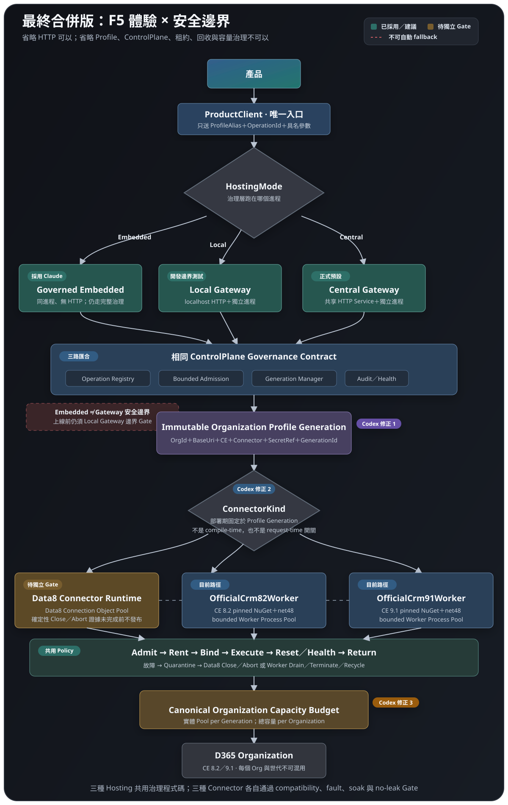

相同：決策骨架
都有 DirectData8、Local Gateway、Central Gateway，也都允許 Gateway 依 Profile 選 Data8 或 Microsoft 官方 Worker。
正確的拆法是兩個互相獨立的決策：產品在哪裡執行連線邊界，以及每一個 Organization Profile 使用哪一種 Connector。 Claude 的圖抓到這個骨架；Codex 更新版把它補成可以落地驗證、可以避免 Session／Memory Leakage 的執行契約。
我採用了 Claude 正確的「三種使用路徑＋多 Connector」骨架。真正差異不在多畫幾個方塊，而在 Pool 的精確身分、容量共享、失敗隔離、借還流程，以及哪些部分目前已實作、哪些仍是提案。
五個「修正」標籤就是它和 Claude 簡化圖真正不同的地方。

高階流程相同；Codex 版本增加的是「不可省略的工程語意」。
都有 DirectData8、Local Gateway、Central Gateway，也都允許 Gateway 依 Profile 選 Data8 或 Microsoft 官方 Worker。
Codex 明定不可 request-time fallback、Pool 綁定不可變 Profile Generation、故障物件不得歸還，以及跨主機共享 Organization 容量預算。
目前 Gateway 已走 CE 8.2／9.1 官方 Worker；Gateway 內 Data8 Pool 與 DirectData8 的新治理介面仍是提案，不應被圖誤畫成已完成。
用同一條主線並排，就能看見「方塊相似、責任不同」。
優點：快速回答「產品如何選路徑」。限制：沒有表達 Profile 更新、Pool 隔離、官方 8.2／9.1 拆分、故障回收與目前實作狀態。
差異：Pool 不只「per Organization」，而是每個不可變 Profile Generation 一個實體 Pool；同一實體 Organization 的所有世代與主機，仍共用同一份總容量預算。
| 比較點 | Claude 圖表達 | Codex 更新版補上的契約 | 為什麼重要 |
|---|---|---|---|
| Local／Central | 畫成 ConnectionMode 的兩個值。 | 對產品而言都走相同 Gateway API；兩者是部署位置與 Endpoint 差異，不必然是現行 enum 的兩個值。 | 避免產品程式因部署拓樸而分叉。 |
| Official | 一個 Official 分支。 | 拆成 OfficialCrm82Worker 與 OfficialCrm91Worker，各自固定 NuGet 圖與 net48 進程。 |
CE 8.2／9.1 SDK 不在同一進程混載。 |
| Pool 身分 | per-Organization Pool。 | 實體 Pool key 是 Organization＋不可變 Profile Generation；容量 key 才是 Canonical Organization。 | 更新憑證或 Connector 時可先建立新世代，再排空舊世代，不污染租約。 |
| Data8 Pool | 看起來像 Data8 套件自己提供。 | Data8 本身不是中央 Pool；Pool、重設、健康檢查與回收皆由本專案的 Runtime Adapter 擁有。 | 避免把第三方 Client 的能力與本專案治理能力混為一談。 |
| 借還／故障 | 單向流到 CRM。 | 明定 Admit → Rent → Execute → Reset → Return；故障走 Quarantine → Close／Abort／Recycle。 | 故障 Connection 不可回池，才不會造成 Session／Memory／Handle Leakage。 |
| Fallback | 圖中沒有說明。 | 一個 Request 綁定一個 Connector 與一個 Profile Generation；失敗不得自動改走另一 Connector。 | 避免重複寫入、身分漂移與不可重現的錯誤。 |
| 完成狀態 | 概念方塊容易被理解成已完成。 | 官方 Worker 是目前實作路徑；Gateway Data8 Connector 與治理後 DirectData8 必須另做實作與獨立 Gate。 | 架構選項不等於已驗證功能。 |
保留三種使用體驗；Gateway 內保留多 Connector，但每個 Request 只走一條確定路徑。
產品只知道 ProfileAlias、受控 Operation 與 Endpoint；CRM URL、ConnectorKind、Worker 路徑與 SecretRef 都由部署端擁有。
真正能防止 Leakage 的不是 ConcurrentBag，而是租約的唯一擁有者、狀態清除與故障隔離。
Data8 與 Gateway 不是互斥產品；DirectData8 是執行位置，Data8 Connector 則可以是 Gateway 裡的一種實作。
| 路徑 | 主要用途 | 效能輪廓 | 隔離／治理 | Pool 與資源 | 建議 |
|---|---|---|---|---|---|
| DirectData8 | 特殊獨立產品、明確相容需求、最簡單的同進程啟動。 | 少一段 HTTP／IPC，單次呼叫理論開銷最低；實際差距必須同條件 benchmark。 | SDK、Credential 與可變 Client 狀態進入產品進程；每個產品各自負責安全與回收。 | 每個產品各有 Pool，無法共享中央資源；Data8 lifecycle 需補足確定性關閉證據。 | 保留但明確 opt-in |
| Local Gateway | Visual Studio 開發、整合測試、單機隔離部署。 | 有 localhost HTTP＋IPC；可透過預熱與 bounded pool 壓低延遲。 | 產品不載入 CRM SDK；可測到與 Central 相同契約。 | 本機 Gateway 擁有並在停止時完整 drain／dispose／terminate。 | 開發預設 |
| Central Gateway | 正式環境、多產品、多 Organization 共用連線治理。 | 多一個網路 hop，但能集中預熱、限制並行、共享治理；吞吐須以正式壓測決定。 | 最強的產品／SDK／Credential 邊界，集中授權、稽核與故障隔離。 | 每個 Profile Generation 的 Pool 由中央擁有；同 Organization 共用總容量。 | 正式預設 |
保留 Data8 為長期選項、把「Gateway 部署位置」與「Connector 選擇」拆成兩軸、把 F5 體驗列為正式需求，並要求以實測而不是品牌推定效能。
Data8 尚未被證明自帶安全 Pool；修改單一 static 欄位不足以證明 8.2／9.1 共存；Embedded 不等同進程隔離；未實測的毫秒與記憶體數字不列為決策證據。
這份圖是「更新後的目標設計」，同時保留現況標籤，避免把提案誤認為已完成。
Gateway → ControlPlane／WorkerSupervisor → CE 8.2 或 CE 9.1 net48 官方 NuGet Worker → Organization Service。
將 Data8 從「Phase 6 必刪暫時碼」改成可長期保留的 Connector 選項，但必須先補 Gateway Adapter、Pool lifecycle 與獨立 compatibility／no-leak gate。
DirectData8 的治理後介面、Gateway 內 Data8 Pool，以及 Local Gateway 的一鍵 F5 編排，都不能只靠架構圖宣告完成。
不做 request-time Connector fallback；不讓一個 Pool 跨 Organization 或跨 Profile Generation；不把 Credential／CRM URL／SDK 型別暴露給產品。
Phase 不是「最後刪掉 Data8」的倒數，而是每條 Connector 路徑逐步取得可部署證據。
CE 8.2／9.1 真實 Organization 操作矩陣、錯誤語意、timeout／cancellation、Profile 隔離、確定性 cleanup。官方 Worker 與 Data8 分開判定，不能互相代替。
多產品並行、跨主機 Organization 容量、worker crash、故障 Connection 隔離、profile replacement、drain、recycle、負載與長時間 soak。
正式產品預設 Central Gateway、開發預設 Local Gateway；可保留已通過 Gate 的 Data8 Connector／DirectData8。移除的是未治理舊引用與不安全舊 Pool，而不是因名稱就刪除 Data8。
不是否定 Claude，而是把 Claude 的好骨架提升成可落地的工程決策。